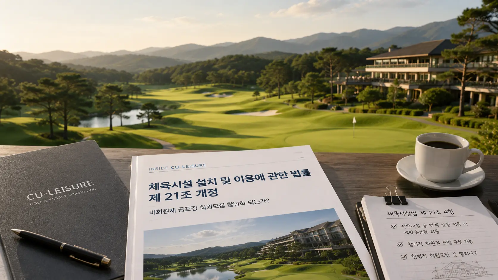

골프시장을 달구는 뜨거운 감자가 있다. 그린피 할인 혜택과 제한적으로 골프 우선예약권을 허용하는 체육시설법의 개정, 대중제 골프장은 합법적인 회원권 모집을 할 수 있을까. 골프&리조트 전국 최다 컨설팅 및 분양 대행 이력을 보유한 골프장 및 리조트 분양대행 전문업체 씨유레저에게 관련 이슈에 대해 의견을 구한다.

체육시설법 개정 내용은 무엇인가?
2022년 회원제 골프장과 유사한 방식으로 운영되는 대중제 골프장의 편법 운영을 막기 위해 체육시설법 '제10조의2'에서 골프장업의 세부 종류를 회원제 골프장, 비회원제 골프장 그리고 일정 요건을 충족하는 대중형 골프장으로 구분하였다.
또한 추가적으로 '회원'의 기준을 다음과 같이 변경했다.
기존: "일반이용자보다 우선적으로 이용하거나 유리한 조건으로 이용하기로 약정한 자"
개정: "일반이용자보다 유리한 조건으로 우선적으로 이용하기로 약정한 자"
우선예약권, 그린피 할인 둘 중에 하나만이라도 적용되면 '회원'이라고 정의하던 기준을, 우선예약과 그린피 할인 두 가지를 동시 충족했을 경우를 '회원'으로 변경하여 규정한 것이다.
사실상 예약 우선권만 제공하지 않으면 회원제 골프장과 유사한 방식의 회원 혜택 제공을 용인하는 것으로 해석될 수 있다. 이러한 해석을 반영한 사례가 있다.
그린피 할인만은 회원모집 행위 아니다 — 법원의 판단
R그룹에서 운영하는 의성 M골프장은 대중형 골프장임에도 불구하고 평생회원권을 모집했고, 경상북도는 2022년 의성 M골프장에 유사 회원권 판매 행위를 중단하라는 시정명령을 내렸다.
이에 R그룹은 모집한 회원들에게 제공했던 관련 혜택을 모두 중단했고, 회원들의 이용 약정 이행에 관한 소송이 제기됐다. 해당 소송에서 재판부는 그린피 할인만을 제공하는 경우는 현행 체육시설법상 회원모집 행위에 해당된다고 보기 어렵다고 보아 회원 혜택 제공을 이행하라는 판결을 내림으로써, 위 해석을 뒷받침했다.
현행 법령상 콘도미니엄 회원권으로 골프 혜택을 부과하는 것은 가능하다는 재판부의 의견이다. 하지만 예약 보장 또는 예약 우선권을 부여하는 것은 별개의 문제였다. 회원제 골프장의 회원권이 회원에게 예약 우선권을 부여함으로써 그 가치를 인정받으나, 골프 혜택을 부과하는 콘도미니엄 회원권은 동일 혜택 대비 낮은 가치가 부여되는 것이 현실이다.
회원제가 아니더라도 카스카디아나 사우스케이프 오너스와 같은 비회원제 골프장이 많은 투자를 통해 골프장의 퀄리티에 있어서 회원제 골프장에 버금가는 또는 그를 넘어서는 골프장이 조성되고 있으며, 골프장 코스 구성이나 관리 상태에 있어서 그 질적 격차가 과거에 비해 상당 부분 좁혀졌음에는 반론의 여지가 없다.
또한 회원제로 운영하던 많은 골프장들이 운영상의 문제로 비회원제로 전환하면서 그 격차는 더욱 완화되었다. 회원권 가치의 핵심 요소 중 하나가 예약 우선권임을 부정할 수는 없을 것이다.
체육시설법 제21조 개정
— 비회원제 골프장 예약 우선권 적용 회원권 발행, 현실화 되나?
더시에나 제주, 롯데리조트 부여, 해운대비치 골프앤리조트 등 20건 이상의 숙박시설을 보유한 골프장 및 리조트의 컨설팅, 분양 대행을 전국에서 가장 많이 수행한 씨유레저는 2024년 2월 신설된 체육시설법 제21조 4항에 주목한다.
체육시설법 제21조 2항, 3항에서 비회원제 골프장에 예약 우선권을 제공할 수 없다는 전제에 예외 규정을 둔 것이다.
- 골프장과 숙박시설 등을 함께 묶은 상품의 이용
- 대통령령으로 정하는 인원수 이상으로 구성된 단체의 정기적 이용
- 국가행정기관, 지방단체, '국민체육진흥법'에 따른 경기단체가 주관 또는 주최하는 대회, 청소년 선수 후원 등을 위한 공익 목적의 대회, 청소년 선수 연습 지원
주목할 부분은 제21조 4항 1목이다. 숙박시설 등을 함께 묶은 상품의 이용 시 예약 우선권을 제공할 수 있다는 부분이다.
건축법상 숙박시설의 이용 시 골프장 이용을 연계할 경우 7일 이내의 기간 동안은 예약 우선권을 적용할 수 있으며, 해당 골프장 1일 전체 티오프 수의 100분의 40 이내에 해당하는 기간이라고 표현했다.
해당 법령의 개정이 발표되고 경기가 회복의 시그널을 보이면서, 기존 골프장과 숙박시설 개발을 진행 준비 중이던 다수의 시행사에서 씨유레저로 관련 문의가 접수되고 있다.
회원모집을 통해 투자금을 회수할 수 있다는 긍정적인 시그널로 작용한 것이며, 제한적일 수 있지만 회원제 골프장과 동일한 기능을 가진 합법적인 회원권이 출시될 수 있을 것으로 해석 가능하다.
골프텔이라고 불리는 숙박 보유 골프장, 모두 가능한가?
이른바 골프텔이라고 불리는 숙박시설을 보유한 모든 골프장은 해당 시설과 연계하여 예약 우선권을 적용한 패키지 상품을 출시할 수 있다. 하지만 운영 중인 골프장 및 개발 예정인 시행사에서 개발 자금 및 운영 자금을 확보하기 위한 회원권을 구성하는 것은 관광숙박시설에 한해서만 적용 가능하다.
관광진흥법은 제20조에서 관광사업을 등록한 자 또는 그 사업계획의 승인을 받은 자가 회원모집을 할 수 있으며, 휴양 콘도미니엄은 회원모집에 더불어 분양을 할 수 있도록 명시하고 있다. 또한 관광진흥법 시행령 제24조 2항 2호는 "호텔업의 경우 관광사업의 등록 후부터 회원을 모집할 것"이라고 규정한다.
이는 꼭 보유 숙박시설이 콘도미니엄이 아니더라도 관광호텔을 운영하고 있는 업체 또한 호텔의 회원제 회원권을 발행할 수 있다는 의미이며, 법령 내에서 가능한 다양한 케이스의 회원권 또는 그와 유사한 혜택을 보유한 다양한 상품들이 파생될 수 있다는 의미이다.
2025년의 시장 — 비용은 증가, 영업이익률은 감소
2025년 들어서 주요 광역도시권에서 접근성이 1시간이 넘는 골프장들의 내장률 하락이 급속도로 가속화되고 있고, 그린피 인하 경쟁, 마케팅 경쟁이 심화되고 있다. 비용은 증가하고 영업이익률은 감소한다.
고정 고객의 확보는 필연적이며, 이는 선불카드, 회원권 등 다양한 방식으로 시장에 등장할 것이다.
해당 법령이 시장에 적용되지 않은 상태에서 전문가 검토 없이 진행할 경우 역효과 발생 가능
골프&리조트 회원권 시장을 직접 컨설팅하고 추적·관찰한 씨유레저는 경고한다. 해당 법령이 시장에 적용되지 않은 상태에서 전문가의 검토 없이 회원 모집 승인을 진행하거나 광고 및 홍보를 진행했을 때, 역효과는 다양한 방식으로 발생할 수 있다.
시장의 시작 단계에서는 관련 케이스를 수행한 컨설팅 업체와의 협의와 신중한 진행이 반드시 필요할 것이다. 기획 단계부터의 명확한 설계는 필수적이다.
회원제 골프장의 인허가 사항 및 이익 구조에 따라 비회원제 골프장 및 숙박시설이 지속적으로 개발되고 있다. 개발 비용 및 금융 비용의 증가로 개발 이익이 감소하는 현 상황에서, 예약 우선권을 확보한 회원권의 모집은 투자금 회수 및 개발 비용 마련에 중요한 포인트로 작용할 것이다.